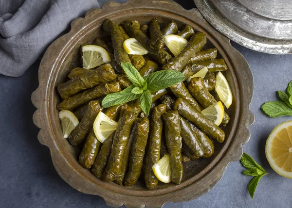

Recipe For Sarma

Description
Sarma is a traditional Turkish dish that involves grape leaves (or occasionally cabbage leaves) rolled around a deliciously spiced rice filling. The filling, which often includes rice, onions, fresh herbs like parsley and dill, and spices such as allspice and mint, can also be enriched with ingredients like pine nuts and currants for added flavor and texture. Once wrapped, the grape leaves are gently simmered in a bath of olive oil, lemon juice, and water until tender.
Sarma is typically served cold as an appetizer or side dish and is beloved for its delicate, fresh, and slightly tangy flavors. The name "sarma" means "wrapped" in Turkish, reflecting the care taken in hand-rolling each grape leaf bundle. Sarma can be found across the Middle East, Mediterranean, and Balkan regions, each with its own twist, making it a cherished comfort food with a rich cultural history.
Ingredients
- 1 jar of grape leaves (about 50-60 leaves)
- 1 cup rice
- 2 medium onions, finely chopped
- 1/4 cup olive oil (plus extra for cooking)
- 1/2 cup fresh parsley, chopped
- 1/4 cup fresh dill, chopped
- 1/4 cup pine nuts (optional)
- 1 tbsp currants (optional)
- 1 tsp salt
- 1/2 tsp black pepper
- 1 tsp allspice
- 1 tsp dried mint
- Juice of 1 lemon
Steps
Prepare the Leaves:
If the grape leaves are preserved in brine, rinse them thoroughly to remove excess salt. Blanch them in boiling water for a minute to soften, then set aside.Make the Filling:
Heat olive oil in a pan and add chopped onions. Sauté until softened and translucent.
Add pine nuts (if using) and cook for a few more minutes.
Add rice and stir until slightly translucent. Then, add 1 cup of water, salt, pepper, allspice, and mint. Simmer until the water is absorbed and the rice is half-cooked.
Remove from heat and stir in chopped parsley, dill, and currants (if using). Let it cool slightly.Wrap the Leaves:
Lay a grape leaf flat, shiny side down. Place about a teaspoon of filling near the stem end of the leaf.
Fold the sides of the leaf over the filling and roll it up tightly from the stem end, like a small burrito. Repeat with the remaining leaves and filling.Cook the Sarmas:
Place the sarmas snugly in a large pot, seam-side down.
Drizzle olive oil and lemon juice over them, and add enough water to cover halfway.
Cover the pot and simmer on low heat for about 30-40 minutes, until the rice is fully cooked and the leaves are tender.Serve:
Let them cool, then serve cold with extra lemon wedges and a drizzle of olive oil.